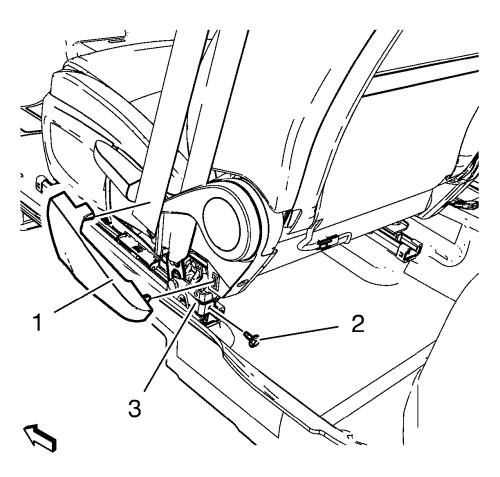
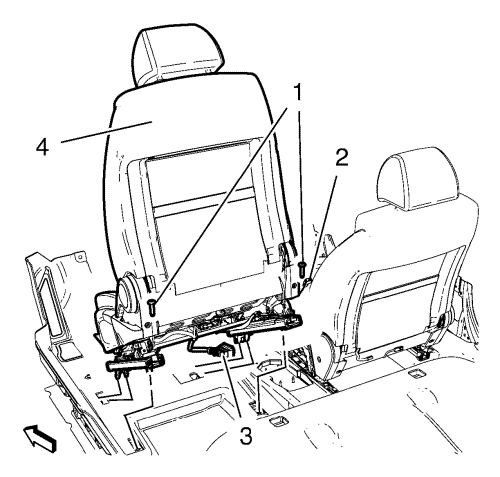

Sustitución del asiento del conductor o el acompañante
Procedimiento de desmontaje
Advertencia: Consulte Advertencia SIR en la sección Prólogo.

Aviso: al transportar un módulo generador de gas bajo tensión, asegúrese de que la abertura de la bolsa está dirigida lejos de su cuerpo. Esto minimiza la probabilidad de lesiones en caso de activaciones accidentales. No transporte nunca el módulo generador de gas por los cables. No transporte nunca el módulo generador de gas por el conector situado en su parte inferior.
Asegúrese de que la bolsa y la tapa de guarnecido miran hacia arriba siempre que coloque un módulo generador de gas bajo tensión sobre cualquier superficie. Esto es necesario para proporcionar un espacio libre para la expansión de la bolsa en el caso improbable de una activación accidental.
No apoye nunca el conjunto de la columna de dirección sobre el volante con el módulo generador de gas hacia abajo y la columna en vertical. Esto podría ocasionar lesiones físicas.
- Desactivar el sistema de la sujeción inflable suplementaria (SIR). Consultar Deshabilitación y habilitación del sistema de airbag (SIR). .
- Desmonte la cubierta (1) de acabado superior del dispositivo de reclinado externo del asiento delantero.
- Desenrosque el perno (2).
- Desmonte el cinturón de seguridad (3) del asiento delantero.

- Desenrosque los 2 pernos (1).
- Desenchufe el enchufe del mazo de cables (2) de la hebilla del cinturón.
- Suelte y desconecte el enchufe del mazo de cables (3) del asiento delantero.
- Desmonte el asiento delantero (4) de la guía delantera.
Procedimiento de montaje
- Realice la sincronización de las guías del asiento delantero. Consultar Sincronización de las guías del asiento delantero .
- Monte el asiento delantero (4) en la guía delantera.
- Conecte y enchufe el enchufe del mazo de cables (3) del asiento delantero.
- Conecte enchufe del mazo de cables (2) de la hebilla del cinturón.
Precaución:Consulte Precaución con las fijaciones en la sección Prólogo.
- Apriete los 2 tornillos (1).
Apretar
45 N·m (33 lib. pulg.)
- Monte el cinturón de seguridad (3) en el asiento delantero.
- Apriete el perno (2).
Apretar
9 N·m (80 lib. pulg.)
- Monte la cubierta (1) de acabado superior del dispositivo de reclinado externo del asiento delantero.
- Activar el sistema SIR. Consultar Deshabilitación y habilitación del sistema de airbag (SIR). .
| © Copyright Chevrolet. Reservados todos los derechos |